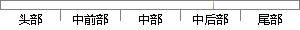

本章是第三章所述方案的应用和验证，主要是针对被动DNS当中出现的恶意流量以及恶意域名，设计了提取和检测的模型，并设计实现了一个恶意域名检测应用原型系统程序，以验证方案的正确性和可行性。
片段位置图

相似结果|
1
原句片段：，设计了提取和检测的模型，并设计实现了一个恶意域名检测应用原型系统程序，以验证方案的正确性和可行性。
相似片段 1：的模拟执行,通过这两种不同级别的模拟执行分析出应用程序中潜在的恶意行为.基于上述方法,设计和实现了一个原型系统.通过对公开的恶意应用样本进行检测,验证了本方法...
相似片段 2：占据了智能手机操作系统市场的大量份额,但同时Android恶意应用的数量也在以惊人...本文以此为背景,设计了一个基于机器学习的新型检测方案并设计实现了原型检测系统...
|
※ 片段修改建议 ※
近似词参考：- 应用：利用 运用
- 主要：首要 重要
- 要是：如果
- 当中：傍边 之中
- 出现：呈现 泛起 涌现
- 恶意：歹意
- 以及：和
- 恶意：歹意
- 设计：计划
- 模型：模子
- 设计：计划
- 恶意：歹意
- 应用：利用 运用
- 系统：体系
- 程序：法式 步伐
系统自动生成语句：本章是第三章所述方案的利用和验证，首要是针对被动DNS傍边呈现的歹意流量和歹意域名，计划了提取和检测的模子，并计划实现了一个歹意域名检测利用原型体系法式，以验证方案的正确性和可行性。
注：本片段修改建议为系统自动生成，仅供参考。